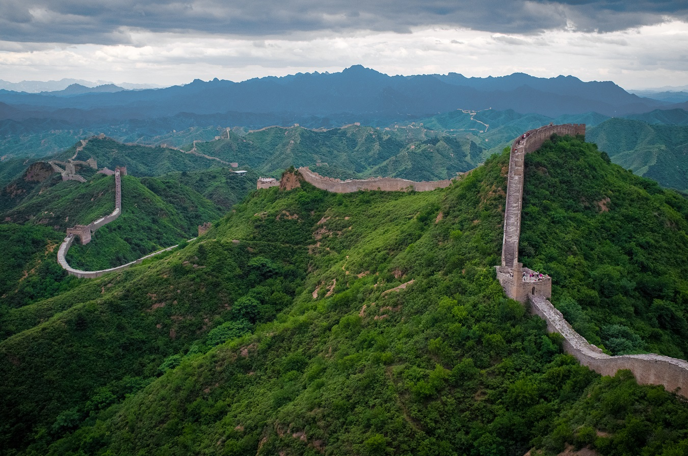

La Gran Muralla China
Es uno de los principales sitios arqueológicos mayas de la península de Yucatán, en México. Se encuentra a escasos 2.5 km de la localidad de Pisté, en el municipio de Tinum, en el estado de Yucatán, al sureste del país. Consistió en una ciudad o un centro ceremonial que pasó por diversas épocas constructivas e influencias de los distintos pueblos que la ocuparon y que la impulsaron desde su fundación. Fue inscrita como Patrimonio de la Humanidad por la Unesco en 1988. El 7 de julio de 2007, el Templo de Kukulcán, ubicado en Chichén Itzá, fue reconocido como una de las nuevas siete maravillas del mundo moderno, por una iniciativa privada sin el apoyo de la Unesco, pero con el reconocimiento de millones de votantes alrededor del mundo.
